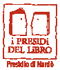

Sogni di Carta è un'Associazione di Promozione Sociale, apolitica e senza scopo di lucro, che persegue finalità civiche, solidaristiche e di utilità sociale attraverso la cultura.
Sogni di Carta APS opera senza scopo di lucro, ispirandosi ai principi di democraticità e gratuità, con l'obiettivo di promuovere la solidarietà sociale e la crescita culturale del territorio di Nardò e non solo.
L'associazione realizza le proprie finalità in via principale attraverso attività di interesse generale legate all'educazione, alla formazione e alla promozione culturale, come previsto dal proprio Statuto e dal Codice del Terzo Settore.
Gli eventuali avanzi di gestione non vengono mai distribuiti, ma reinvestiti integralmente nelle attività istituzionali dell'associazione.

Sogni di Carta APS è Presidio di Nardò della rete nazionale I Presìdi del Libro, che promuove la lettura e la cultura come strumenti di cittadinanza attiva.
In coerenza con l'art. 5 del Codice del Terzo Settore, l'associazione svolge in particolare le seguenti attività di interesse generale:
Scopri il Festival Crocevia per lo Ionio e i prossimi eventi in programma.
Vai agli eventi